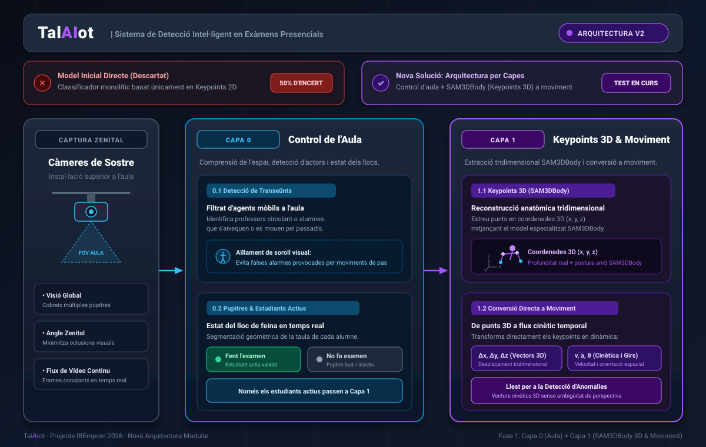

Definició de capes
05/11/2026
A TalAIot estem desenvolupant un sistema de visió per computador per detectar conductes irregulars o trampes en exàmens presencials mitjançant càmeres instal·lades al sostre de l'aula. Aquesta setmana hem fet un canvi de rumb fonamental en l'arquitectura del sistema després dels nostres primers resultats experimentals.
El problema: el fracàs del model directe (50% d'encert)
En el nostre primer prototip vam intentar entrenar un model d'intel·ligència artificial directe que detectés les trampes utilitzant únicament keypoints 2D (punts anatòmics de les persones). El resultat va fallar estrepitosament: vam obtenir al voltant d'un 50% d'encert, el mateix que llançar una moneda a l'aire.
La nova estratègia: arquitectura modular per capes
Per solucionar aquest problema, hem dissenyat una arquitectura per capes desacoblada que començarem a testejar i validar aquesta mateixa setmana. En lloc d'un bloc monolític, dividim el processament en fases especialitzades i auditables:

Capa 0: Control de l'aula i context espacial
La Capa 0 s'encarrega d'entendre l'entorn de l'aula a través del flux de vídeo de les càmeres zenitals abans de qualsevol anàlisi biomètrica:
- Detecció de transeünts: Identifica i filtra automàticament les persones que estan en trànsit (professors vigilant l'examen, alumnes entrant o sortint, gent caminant pels passadissos). Això elimina el soroll visual i prevé falsos positius.
- Mapeig de pupitres i detecció d'estat: Segmenta cadascun dels llocs de l'aula i distingeix en temps real quan un estudiant està fent l'examen activament o quan el pupitre està buit / l'alumne no està participant en l'avaluació.
D'aquesta manera, només els estudiants que estan realment fent l'examen al seu pupitre es transmeten com a subjectes d'anàlisi a la següent etapa.
Capa 1: Keypoints 3D (SAM3DBody) i conversió a moviment
Un cop aïllat l'estudiant actiu, la Capa 1 supera la ceguesa de perspectiva de l'antic intent dividint el processament en dos passos clau:
- Capa 1.1: Extracció de keypoints 3D amb SAM3DBody: A diferència del model anterior (que
utilitzava punts plans en 2D fàcilment distorsionables per la inclinació de la càmera), s'utilitza
SAM3DBody per extreure les posicions anatòmiques en un espai tridimensional
(x, y, z). Això permet conèixer la profunditat real, la postura corporal completa i l'orientació exacta del cap i de les extremitats de l'alumne. - Capa 1.2: Conversió directa a moviment: Aquesta subcapa agafa directament els punts clau 3D i
els transforma en vectors de moviment al llarg del temps (desplaçament
(Δx, Δy, Δz), velocitat, acceleració i variacions angulars de gir).
El resultat és una descripció cinètica pura del comportament de l'estudiant, lliure de les limitacions de perspectiva i de coordenades estàtiques, deixant la informació preparada per als models posteriors de detecció de patrons de còpia.
Objectius d'aquesta setmana
Durant els propers dies implementarem i provarem aquestes dues primeres capes amb les gravacions de prova disponibles per calibrar la precisió de la segmentació de pupitres i verificar que els vectors de moviment reflecteixen fidelment els patrons de comportament a l'aula.